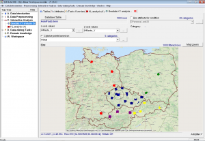
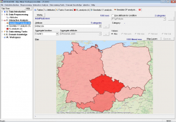

Začínáme
Systém LISp-Miner a proces DZD
Analytické procedury
Pokročilé funkce
Výzkum a vývoj
Začínáme
Systém LISp-Miner a proces DZD
Analytické procedury
Pokročilé funkce
Výzkum a vývoj
Systém LISp-Miner nabízí některé nástroje pro práci s geografickými daty – daty, ve kterých jsou buď přímo geografické souřadnice, nebo obsahují odkazy na geografické oblasti (obvykle pomocí názvů států, krajů, okresů atp.). Není ambicí vytvořit ze systému LISp-Miner plnohodnotný geografický informační systém (GIS), ale při implementaci nástrojů v LISp-Mineru byly tyto systémy použity jako inspirace.
 Geografická data se zobrazují na mapě spolu s dalšími vrstvami.
 Vrstvou může být rastrový obrázek nebo vektorová grafika. Jako podklad obvykle slouží vrstva s mapou nebo ortofotomapou. Nad podkladovou vrstvu se zobrazují vlastní analyzovaná data. Buď jde o body dané geografickými souřadnicemi, nebo o oblasti v různě tmavým barevných odstínech.
Kromě toho můžeme na mapě nechat zobrazit další (vektorové) vrstvy, například s hranicemi států, krajů nebo okresů.
V současné době je v systému LISp-Miner implementována geografická analýza bodů a geografická analýza oblastí umožňující vyjádřit frekvence záznamů v oblasti pomocí jejího barevného odstínu.
Vrstvy, které se mají v mapě zobrazovat, vybíráme pomocí tlačítka Map Layers na příslušné záložce analýzy geodat. Podle typu analýzy je na možné do mapy vložit buď jednu nebo více vektorových vrstev. Vždy je možné zvolit, zda se má zobrazovat podkladová vrstva a jakého má být typu (mapa, satelitní snímky, vlastní obrázek).
Aby se vrstva v nabídce zobrazovala, musí být nejprve definována – viz Definice vektorových vrstev a Definice rastrových vrstev.
Vektorové vrstvy se zobrazují buď jako hranice oblastí spolu s bodovými daty (např. hranice států, krajů, okresů…), nebo jako plochy s různým barevným odstínem.
Dostupné vektorové vrstvy definuje pomocí položky Vector Layer settings v menu File. Součástí instalaci systému LISp-Miner je i několik základních vektorových vrstev – viz obrázek.
Novou definici vektorové vrstvy přidáme tlačítkem Add. V současné době je podporován pouze formát Keyhole Markup Language.
Pro vektorovou vrstvu je nutné zadat vhodný název, cestu a název souboru s definicí vrstvy a dále barvu a sílu čar (při zobrazení hranic) a barvu použitou pro kreslení výplně.
Rastrové vrstvy tvoří podklad mapy. V současné době je možné automaticky stahovat podklad OpenStreetMap nebo satelitní snímky MapQuest. Alternativně můžeme vytvořit libovolný rastrový obrázek ve formátu JPG a ten nechat zobrazit jako podklad. Může jít například o půdorys nákupního střediska, ve kterém chceme sledovat pohyb zákazníků.
Dostupné rastrové vrstvy definuje pomocí položky Raster Background settings v menu File. Po instalaci systému LISp-Miner budou přednastavené dva poklady – OpenStreetMap a MapQuest Satellite Maps, mezi kterými je možné přepínat. Při otevření nové záložky se zvolí mapový podklad OpenStreetMap.
Pomocí tlačítka Add můžeme přidat definici dalšího podkladu jako obrázku ve formátu JPG.
V dialogovém okně zadáme nejprve vhodný název pro podklad. Následně je třeba zadat cestu a název souboru s obrázkem a hlavně souřadnice jeho čtyř rohů. Pomocí těchto souřadnic bude obrázek umístěn na mapu. Souřadnice musí být ve stejném souřadném systému, jako jsou souřadnice v analyzovaných datech.
Položkou Geodata Options v menu File můžeme vyvolat dialogové okno pro nastavení dalších parametrů zobrazování geografických dat.
První je nastavení použitého systému souřadnic. Obvykle pracujeme se souřadnicemi v systému WGS84 (používanými v GPS), ale je možné zavést i vlastní souřadnou soustavu (např. při analýze dat představujících pohyb osob uvnitř budovy).
Podle nastavené systému souřadnice je možné zrcadlově převracet zobrazení mapy. Pro WGS84 je vhodné ponechat zaškrtnutou volbu Cylindrical projection, aby mapy vypadaly přirozeně (byly protáhlé na výšku směrem k pólům).
Další parametr určuje cestu k uloženým rastrovým a vektorovým mapám. Relativní cesta je vzhledem k základní složce systému LISp-Miner. Můžeme však zadat i cestu absolutní, pokud chceme mít mapy například na jiném disku.
Parametr Raster Maps Tiles Cache time-out určuje dobu (ve dnech), po jejímž uplynutí jsou z disku mazány dříve stažené dlaždice podkladových map. Tlačítkem Clear Cache now můžeme dlaždice smazat ručně. Při příštím požadavku na zobrazení mapy budou znovu staženy webového serveru. Lokální cache umožňuje prohlížení mapy i v případě, že není dostupné připojení na Internet.
Související témata:
Interaktivní geografická analýza bodů
Interaktivní geografická analýza oblastí

{kind=link}
{kind=link}
{kind=link}
{kind=link}
{kind=link}